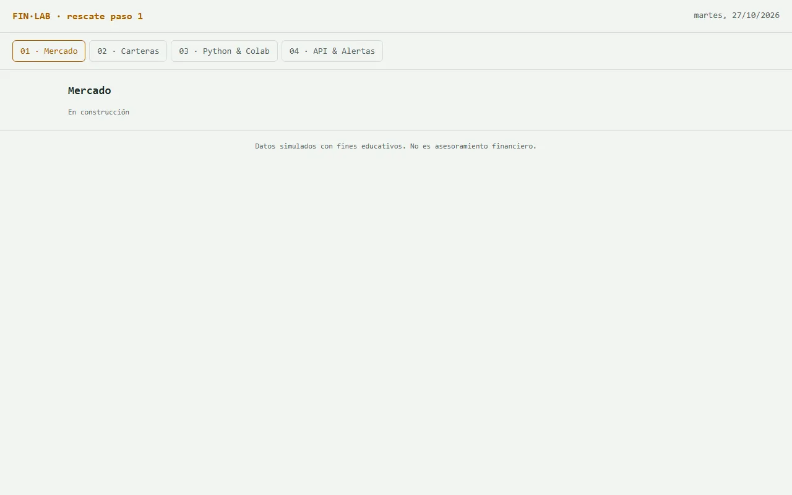

PASO 1 · EL PRIMER ARCHIVO Y EL CICLO DE TRABAJO
El esqueleto: encabezado y cuatro pestañas
Primero el armazón vacío, como los planos de una casa antes de los muebles. Pero lo más importante de este paso es aprender el ciclo que van a repetir en todos los demás: pedir → guardar → abrir → comprobar → guardar versión.
Qué van a lograr
Una página que abre con doble clic, con el nombre de su terminal arriba y cuatro pestañas: Mercado, Carteras, Python & Colab y API & Alertas. Son las mismas que tiene la terminal final.
En construcción
Así va quedando
- Esqueleto (este paso)
- Datos (todavía no)
- Mercado (todavía no)
- Indicadores (todavía no)
- Carteras (todavía no)
- API (todavía no)
- Colab (todavía no)
- n8n (todavía no)
- #/guiado (todavía no)
- Clave (todavía no)
- Modelo (todavía no)
- Agente (todavía no)
- Consejo (todavía no)
- MCP (todavía no)

El prompt
Paso 1. Creá el archivo inicial: - un encabezado con el nombre de la terminal y la fecha de hoy - una barra de 4 pestañas: "01 · Mercado", "02 · Carteras", "03 · Python & Colab", "04 · API & Alertas" - al hacer clic en una pestaña se muestra solo su sección, con un título y el texto "En construcción" - un pie con la leyenda "Datos simulados con fines educativos. No es asesoramiento financiero." - que se vea bien en el celular Todavía no agregues datos ni gráficos.
Qué hacer, clic por clic
- Copien el prompt de arriba y péguenlo en el mismo chat del paso 0.
- Esperen la respuesta completa. Tiene que empezar con <!DOCTYPE html> y terminar con </html>. La mayoría de los chats muestran un botón Copiar arriba del bloque de código.
- Creen el archivo: en Windows, abran el Bloc de notas, peguen, y en Archivo → Guardar como elijan la carpeta finlab, pongan de nombre finlab.html y en Tipo elijan Todos los archivos. En Mac, usen TextEdit en Formato → Convertir a texto sin formato.
- Hagan doble clic en finlab.html. Se abre en el navegador.
- Abran la consola con F12 → pestaña Console. No debería haber líneas en rojo.
- El auditor comprueba la lista de “Cómo comprobar”.
- Guarden una copia del archivo como finlab-v1.html. A partir de ahora siempre trabajan sobre finlab.html y guardan copias numeradas.
Cómo comprobar
- Abre con doble clic y la consola (F12) no muestra errores en rojo.
- Las 4 pestañas cambian el contenido y la activa se distingue de las demás.
- Achiquen la ventana al ancho de un celular (o F12 → ícono de celular): no aparece una barra de desplazamiento horizontal.
- El pie dice que los datos son simulados.
Si algo falla
Después de tu último cambio la página queda en blanco. La consola del navegador muestra este error: [pegar el error exacto, la línea roja] Te paso el archivo completo. No agregues funciones nuevas: encontrá la causa, explicámela en una línea y devolveme el archivo completo corregido. [pegar el archivo]
- La respuesta se corta a la mitad: escriban “seguí exactamente desde donde te cortaste” y peguen las dos partes una detrás de la otra.
- La IA “mejora” cosas que no pidieron: recuérdenle la regla 5 del contexto y pidan “solo el cambio del paso 1”.
- Nada funciona después de tres intentos: vuelvan a la última versión guardada y pidan el cambio en partes más chicas.
Para entender más · cómo funciona y palabras nuevas
El flujo de este paso (y de todos los que siguen)
Pedir
Copian el prompt (desde el paso 2, también su archivo) y lo pegan en el chat.
Guardar
Reemplazan todo el contenido de finlab.html por lo que devolvió la IA.
Probar
Lo abren con doble clic y miran que no haya errores.
Comprobar
El auditor recorre la lista. Si sale bien, guardan una versión; si falla, usan el prompt de rescate y vuelven a pedir.